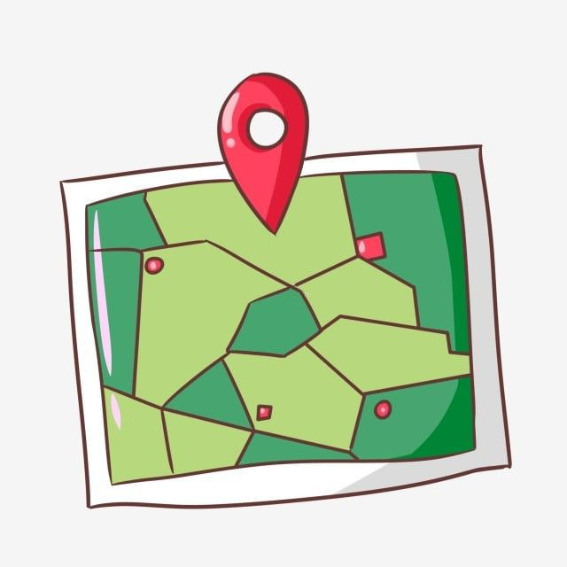
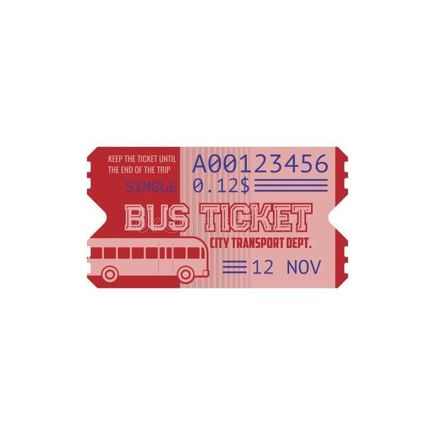
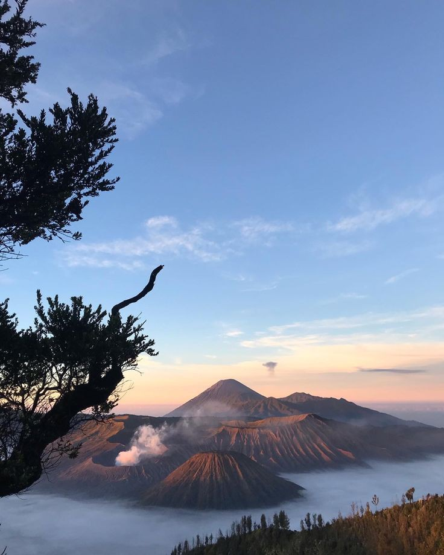
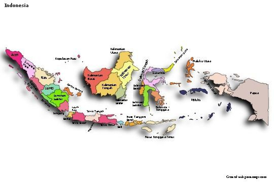
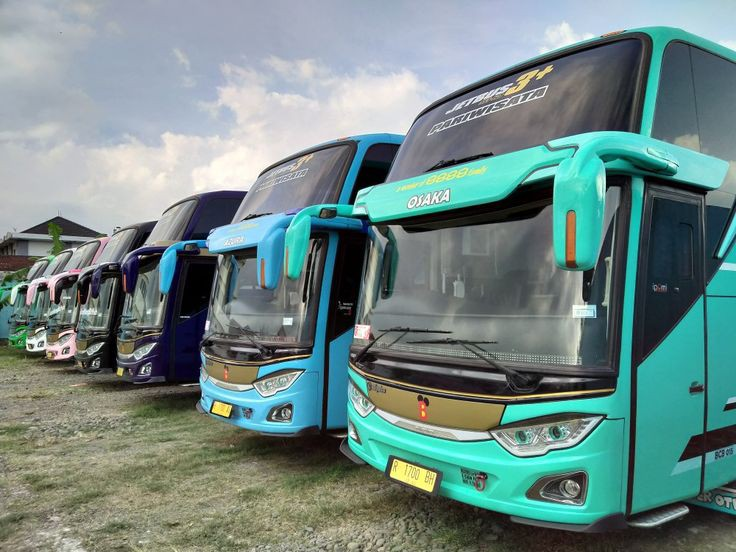

Saat ini, tiket travel menjadi salah satu kebutuhan utama bagi masyarakat yang ingin bepergian dengan nyaman dan aman. Dengan berbagai pilihan transportasi yang tersedia, Anda dapat memilih tiket sesuai dengan kebutuhan perjalanan Anda.
Memesan tiket travel kini semakin mudah dengan kehadiran platform online. Anda bisa membeli tiket kapan saja dan di mana saja tanpa perlu antre di loket fisik, sehingga lebih praktis dan efisien. Perjalanan yang menyenangkan adalah ketika kita meninggalkan rutinitas sehari-hari, membuka diri terhadap pengalaman baru, menikmati setiap momen di tempat asing, bertemu dengan orang-orang yang menginspirasi.
Keuntungan lain dari menggunakan layanan tiket travel adalah adanya berbagai promo dan diskon menarik. Banyak agen perjalanan memberikan harga spesial bagi pelanggan setia atau pemesanan dalam jumlah tertentu.
Selain itu, keamanan perjalanan juga menjadi prioritas utama. Dengan memilih agen travel yang terpercaya, Anda bisa memastikan bahwa perjalanan Anda berlangsung tanpa hambatan dan dengan standar keselamatan yang baik.
Layanan travel juga menawarkan fleksibilitas dalam hal jadwal dan tujuan. Anda bisa memilih berbagai rute yang tersedia, mulai dari perjalanan antar kota hingga perjalanan wisata ke berbagai destinasi menarik.
Tak hanya itu, fasilitas yang disediakan juga semakin beragam. Banyak layanan travel kini menawarkan kenyamanan ekstra, seperti kursi yang lebih luas, WiFi, dan makanan ringan selama perjalanan.
Jadi, jika Anda ingin perjalanan yang nyaman, aman, dan praktis, pastikan untuk memilih layanan tiket travel terbaik. Dengan banyaknya pilihan yang tersedia, Anda bisa menemukan yang paling sesuai dengan kebutuhan Anda.
